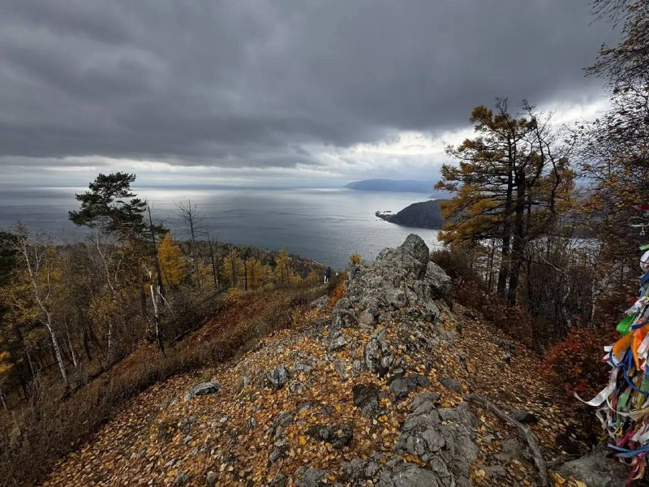

Все прошло отлично! Ездила с дочкой, остались только положительные эмоции! Спасибо за организацию❤️
Дарья
Листвянка и Тальцы
Есть места,
которые остаются внутри.
Ветер над водой. Запах сибирского леса. Тишина, которую хочется увезти с собой.
«Байкал Шарм» — экскурсии по озеру Байкал и Бурятии. Открывайте знакомые по фотографиям места и находите свои.
Познакомиться в TelegramОт берега озера до предгорий Саян.
Каждое направление — другое настроение.

Ветер. Вода. И этот момент.
Маленькая коллекция больших впечатлений.
Листайте открытки — выбирайте своё настроение.
Листайте влево и вправо
От глубокого синего до прозрачной бирюзы. Здесь хочется смотреть вдаль и никуда не торопиться.
Впечатления гостей после путешествий.
Скриншоты отзывов — из нашего Telegram.
Все прошло отлично! Ездила с дочкой, остались только положительные эмоции! Спасибо за организацию❤️
Листвянка и Тальцы
Прекрасно провели один день на Ольхоне. Спасибо нашему гиду Максиму за экскурсию…
Ольхон
Это была волшебная экскурсия! …замечательный гид, интересные беседы, невероятные виды!
Индивидуальная поездка
Выше — фрагменты опубликованных отзывов. Полный текст доступен на скриншотах.
Отзывы в TelegramВыберите направление — и обсудим поездку.
Даты, стоимость и детали уточняйте в Telegram.